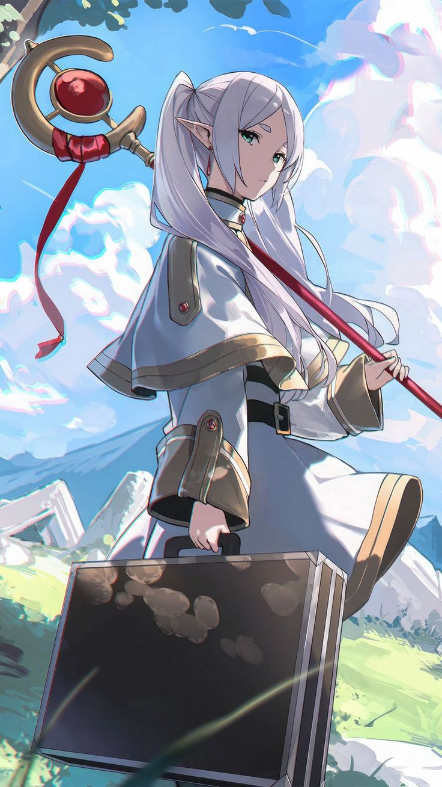

|  | BIOGRAFIA |
|---|---|
|
Frieren é uma elfa maga que viveu por séculos e fez parte do lendário grupo de heróis que
derrotou o Rei Demônio. Após a vitória, ela seguiu sua vida sem perceber o valor do tempo
ao lado dos humanos — criaturas que vivem tão pouco comparado a ela. Só muitos anos depois,
com a morte de seus antigos companheiros, ela começa uma jornada para entender melhor as emoções humanas,
criar novos laços e refletir sobre o que realmente significa viver. Calma, distante e incrivelmente poderosa,
Frieren percorre o mundo para aprender, recordar e seguir em frente. | |
| ARMAS | |
|
Cajado Arcano: Seu foco mágico principal. Ajuda Frieren a canalizar com precisão uma quantidade absurda de mana. Magia Aniquiladora: Feitiços de destruição extremamente avançados. Podem varrer monstros, selar ameaças e devastar áreas com facilidade. | |
| Habilidades | |
|
Mana Imensa e Controle Fino: Possui um domínio de mana tão grande que engana inimigos ocultando seu poder real. Magias Versáteis: Conhece incontáveis feitiços — desde destruição até cura, selamento e suporte. Experiência Antiga: Séculos de batalhas e estudos tornam seus feitiços mais rápidos, precisos e eficientes. |